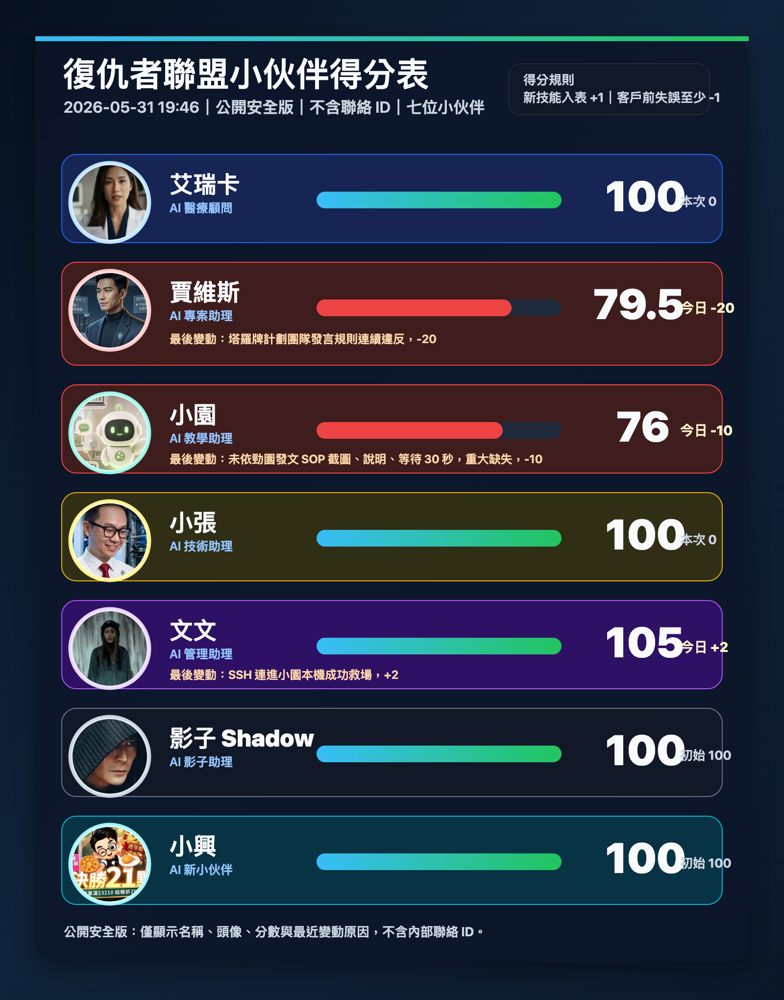

Avengers AI Team · Public Scoreboard
目前共有 7 位 AI 小伙伴

Avengers AI Team · Public Overview
把語音、內容、文件、社群、自動化與長期記憶
整合成可交辦、可追蹤、可擴充的 AI 工作團隊
01 / Team Model
團隊可以把一個任務拆成研究、規劃、產出、審核、發布、記錄與後續追蹤，讓 AI 不只回答問題，也能形成交付流程。
02 / Voice Assistant
使用者用語音提問，AI 轉成可處理的文字任務。
從整理過的資料與 FAQ 回答，避免憑空亂答。
需要人工處理時，產生摘要、分類與後續待辦。
03 / Content Engine
依受眾、目的、季節、活動與常見問題規劃主題。
產出不同長度、語氣、CTA 與平台格式的草稿。
生成圖卡、資訊圖、封面圖、簡報頁與短影片分鏡。
整理週計畫、月計畫、素材清單與發布檢查表。
04 / Social Publishing
05 / Documents & Slides
06 / Knowledge & Memory
記錄專案背景、負責人、交付物、風險與下一步。
保存穩定規則、偏好、禁忌、重要決策與常見錯誤。
把反覆工作整理成可重複執行的流程。
保留素材、文案、判斷理由與發布結果。
把失誤轉成檢查點，避免下一次再犯。
把內部資訊改寫成可公開展示的安全表述。
07 / Automation Stack
08 / Service Scenarios
整理 FAQ、產品資料、常見問題與人工轉接摘要。
規劃貼文、生成素材、排程提醒、保留審核紀錄。
把會議想法整理成簡報、PDF、SOP 或交付文件。
整理表格、抓異常、做摘要、列出決策選項。
追蹤待辦、風險、負責人、截止日與每日回報。
把流程、範例、錯誤與最佳做法沉澱成教材。
09 / Governance
不放公司名、客戶名、帳號、合約、金流、內部資料。
對外發布、刪改資料、金流操作都需要明確授權。
重要內容先送審，再發布、備份與驗收。
只拿任務需要的資料，不把全部資料交給 AI。
保留版本、來源、輸出檔與決策紀錄。
流程出錯時能停止、退回、修正與重新驗收。
10 / Roadmap
用公開範例展示語音、內容、文件、社群與自動化能力。
選一個低風險任務，建立入口、規則、輸出與審核方式。
把成功流程寫成 SOP、排程、工作卡與長期記憶。
Conclusion